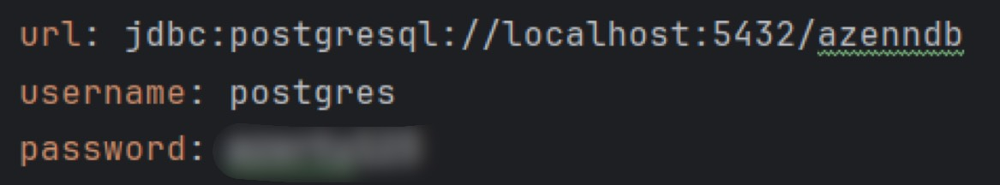

Pendant mes six semaines de stage, Mouhamadou m'a confié la responsabilité d'un projet. L'objectif principal est
de moderniser le processus de pointage des employés de la section informatique lorsqu'ils arrivent à l'entreprise.
Actuellement, ce processus se fait sur une liste papier. Lorsque les salariés arrivent, ils cochent leurs noms sur
la liste. L'idée à donc été de numériser ce registre des présences.
Mon travail a commencé par l'identification des besoins du client, et au cours des six semaines suivantes, j'ai
progressé jusqu'à un stade avancé de développement de l'application. À chaque étape, j'ai collaboré avec différentes
personnes, dont par exemple des discussions avec le client, l'architecte web et mon tuteur de stage, pour m'assurer
que ce que je faisais était en ligne avec les attentes.
Pour cela, j'ai suivi les recommandations de l'architecte Philippe, pour déterminer quel outil utiliser. Il m'a
indiqué que la base de données serait du PostgreSQL, le framework Angular et le langage backend java. J'ai
également pu utiliser l'outil JHipster pour garantir une solution solide et à la page. En effet, cet outil de
développement open-source génère automatiquement des applications Web offrant ainsi une architecture robuste.
En résumé, ce projet a été une expérience enrichissante où j'ai pu prendre en charge l'ensemble du processus, de
la compréhension des besoins du client à la mise en œuvre d'une solution moderne de gestion des présences,
marquant ainsi une évolution significative dans la manière dont l'entreprise aborde ces aspects.
Ci-dessous, vous trouverez un aperçu de l'interface du projet de digitalisation des présences.
Bienvenue dans la section "Gestion du Projet" de mon portfolio ! Au cours de mon stage, j'ai eu la super opportunité
de prendre les commandes d'un projet de A à Z. Cette expérience a été une véritable immersion dans le monde de la
gestion de projet. Dans cette section, je vais détailler chacune de ces étapes.
1. Introduction
Durant mon stage de six semaines, j'ai dirigé un projet visant à moderniser le processus de pointage des employés
de la section informatique de l'entreprise. Dès mon tout premier jour de stage, Mouhamadou m'a annoncé que
j'allais être le seul développeur en charge de mener à bien ce projet. L'objectif fixé était clair : terminer le
projet en six semaines.
2. Reccueil du besoin
Pour réussir ce projet, nous avons suivi les étapes habituelles de création en commençant par la première étape
essentielle : comprendre les besoins des utilisateurs. Cela m'a conduit à rencontrer Annabelle, l'utilisatrice du
système, qui a partagé avec nous ses exigences spécifiques.
Au fil du stage, j'ai affiné le compte rendu du projet à travers quatre versions successives, toutes disponibles
dans la section du blog. Cependant, ci-dessous, vous trouverez la version définitive du compte rendu accompagnée de
toutes les maquettes.
Une fois les besoins recueillis, Mouhamadou m'a présenté à Philippe, avec qui j'aurais de nombreuses discussions sur
le projet. Ensuite, il m'a présenté à d'autres développeurs avec lesquels j'aurais moins d'opportunités d'échanger,
notamment Toky, Driss, Ibrahim et Gwendal, d'autres développeurs des sites de Satolas et Montauban de Bretagne.
En ce qui concerne le programme des réunions, voici un aperçu :
Daily : (Chaque matin à 9h15) - Réunion qui permet aux développeurs
de connaître les tâches de chacun et de les prioriser.
Echange DSI : (Chaque vendredi à 14h) - Réunion où toute l'équipe
informatique discute des grandes lignes de la semaine côté projets, cybersécurité et réseaux.
Sprint Review : (Toutes les deux semaines le vendredi à 9h30h) -
Réunion de revue de sprint qui met en lumière les problèmes rencontrés par chacun durant le sprint.
Planning Poker : (Toutes les deux semaines le lundi à 10h) -
Réunion de planification du sprint qui permet d'estimer les points de vélocité et d'attribuer le temps nécessaire
aux tâches pour le sprint suivant.
Start Sprint : (Toutes les deux semaines le mardi à 9h30) - Réunion
de lancement de sprint où l'équipe se fixe des objectifs.
Une fois ces réunions mises en place, je me suis organisé pour suivre des cours en ligne les deux premières semaines
sur l'outil JHipster ainsi que sa mise en place. J'ai pu suivre différents tutoriels et suivre les conseils de Philippe
pour un apprentissage optimal.
4. Mes difficultés
Durant ce projet, contrairement à ce à quoi je m'attendais, mes difficultés ont été davantage d'ordre logistique et
organisationnel que technique. En effet, la disponibilité de mes interlocuteurs était compliquée. De plus, parvenir
à trouver un consensus au sein de l'équipe a été un défi. Deux opinions divergeaient au sein de l'équipe informatique
: celle de Mouhamadou, le lead dev, préconisant un front et un back générés séparément par Jhipster, et celle de Philippe,
l'architecte, où le front et le back sont générés ensemble par Jhipster dans un même dossier mais séparés ensuite par
mes soins.
5. Proposition de solution
Pour des raisons logistiques, comme Philippe étant à Montauban-de-Bretagne, j'ai finalement suivi les directives de
Mouhamadou. Cependant, en tant que lead dev, ses disponibilités étaient limitées. J'ai alors proposé la mise en place
d'une réunion hebdomadaire, tous les deux jours. Nous avons donc décidé de tenir des entretiens le lundi (à 16h),
mercredi (à 10h) et vendredi (à 10h). Cette méthode m'a beaucoup aidé à avancer, car il me fixait des objectifs à
atteindre pour le surlendemain.
En clôture de mon stage, j'ai réalisé une réunion "démo" avec Annabelle et Mouhamadou dont vous pourrez trouver un
compte rendu détaillé dans le rapport ci-dessous.
Rapport de la démo du vendredi 16 février sur l'application.
Retour d'Annabelle :
-Le RGPD demande de caché les numéros de téléphone des autres employés.
-Comment font les visiteurs qui sont présents à la journée. Les ajoute-t-on dans la liste des employés malgré
tout pour une journée ?
-Qui aura les droits administrateurs ?
Solution à mettre en place :
-Les numéros de téléphone vont être caché sur l'appli mais sont bien présents en base de donnée. (voir ci-dessous)
-Il y aura deux moyens de connexion : Soit en tant qu'administrateur, celui-ci pourra ajouter /supprimer /modifier
la liste des employés. Soit en tant qu'utilisateur lambda. Celui-ci pourra seulement se cocher "absent" ou "présent".
Plus tard, l'idée de créer un compte pour chaque empoyé est envisageable mais pas privilégié pour le moment.
-Le bouton d'impression à finaliser
Pour apercevoir le résultat final de mon stage, rendez-vous en haut de cette page. En revanche, ci-dessous, vous
trouverez l'architecture de mon projet. Comme vous pourrez le constater, le back-end et le front-end sont clairement
séparés. Les fichiers Liquibase sont situés dans le back-end pour assurer la liaison avec PostgreSQL. Dans le front-
end, vous trouverez entre autres tous les composants nécessaires au bon fonctionnement du projet.
6. Conclusion
Tout d'abord, j'ai pu apprécier l'utilité de la méthode agile ainsi que des réunions quotidiennes. Ces pratiques
permettent une efficacité remarquable même lors d'une courte réunion de quinze minutes qu'est le daily. La méthode
agile permet aux développeurs de se fixer des objectifs, stimulant ainsi la collaboration au sein de l'équipe en
favorisant une communication et une adaptabilité aux changements.
Également, j'ai pris conscience de l'importance de la cybersécurité au sein d'une entreprise. Le fait que tous les
employés doivent suivre intégralement la formation sur l'outil DCC Cyber Safe dès leur arrivée souligne l'importance
accordée à la sécurité informatique. L'entreprise ne prend pas cette question à la légère, car quel que soit le poste
de l'employé, s'il utilise un ordinateur, il doit suivre cette formation. Cela met en évidence le caractère crucial
de la cybersécurité.
Enfin, contrairement à mon stage de l'an dernier, j'ai été surpris de constater que la notion d'écoconception
n'était pas d'actualité dans les activités de l'entreprise. En effet, chez Norsys, où l'environnement est au cœur des
préoccupations, le déploiement d'une application sur un serveur et toute manipulation ayant un impact sur l'environnement
sont soumis à des règles strictes. Chez Exertis Azenn, cette pratique n'est pas exigée.
Mes outils
Bienvenue dans la section "Mes Outils" de mon portfolio. Lors de mon stage chez Norsys l'an passé, j'ai eu l'opportunité
de présenter 12 outils que j'ai utilisés. Cette année, chez Exertis Azenn, j'ai pu de réutiliser
plusieurs de ces outils, notamment Jira, Teams ou encore IntelliJ. Par conséquent, je ne vais pas les réexposer à
nouveau. Cependant, je m'apprête à vous présenter dans cette section 5 nouveaux outils que je n'avais jamais
utilisés auparavant. Lorsque vous survolez les logos des outils, vous découvrirez en quelques mots la fonction
principale de l'application. Bonne visite !"
JHIPSTER
Jhipster
JHipster est un outil de développement qui simplifie la création d'applications web en combinant différentes
technologies telles que Spring Boot et Angular. L'outil permet de construire des applications modernes et
puissantes plus rapidement et plus facilement.
Sur une période de six semaines, jugée trop courte par l'architecte Philippe ROUVRAY, il a été recommandé que
j'utilise un outil offrant une base d'application préconçue. C'est ainsi qu'il m'a présenté l'outil JHipster.
Après m'être documenté sur cet outil, j'ai pu l'utiliser pour créer mon application. JHipster peut être utilisé
entièrement en ligne de commande via Git Bash ou via leur site web en ligne. Peu importe la méthode utilisée, il
est possible de créer des entités, de modifier le framework utilisé, la langue de l'application générée, ainsi
que de nombreux autres paramètres que je vous invite à regarder
ici.
DCC Cyber Safe
Lorsqu'un employé arrive dans l'entreprise, quelque soit son expérience professionnelle ou ses compétences
informatiques, et peu importe le poste qu'il va occuper, une sensibilisation aux risques cyberinformatiques
est une étape obligatoire pour tous les nouveaux arrivants.
L'outil présente sous forme de modules les
pratiques à éviter sur différents supports (les sites web, les boîtes mail, les informations partagées aux collègues
etc.) En fonction du poste occupé dans l'entreprise, l'équipe de sécurité informatique d'Azenn attribue certains
modules plutôt que d'autres en se basant sur le domaine dans lequel l'employé va exercer. Certains modules étant
plus importants, l'entreprise demande qu'ils soient repris tous les ans.
DCC Cyber Safe
DCC Cyber Safe est une plateforme conçue pour renforcer la sécurité numérique des entreprises en proposant
une suite d'outils et de services qui permettent de détecter, prévenir et répondre aux cybermenaces.
Bitbucket
Bitbucket
Bitbucket est une plateforme de gestion de code source basée sur Git, conçue pour permettre aux équipes de
développeurs de collaborer efficacement sur des projets logiciels.
Durant mon stage, j'ai pu discuter avec Mouhamadou des outils que j'utilisais pendant mes cours. Il m'a informé
qu'en entreprise, GitHub n'était pas utilisé. En effet, Exertis Azenn utilise l'outil Bitbucket pour son intégration
avec d'autres outils utilisés également par Azenn, tels que Jira ou Confluence.
Cette compatibilité étendue
avec d'autres outils favorise une logistique opérationnelle plus efficace. Par exemple, les employés n'ont besoin
que d'un seul compte pour accéder à tous ces outils, ce qui renforce également la sécurité informatique. (En cas
de départ de l'employé notamment puisque la suppression de ses accès est davantage centralisé) .
Confluence
Bien que je n'aie pas eu beaucoup l'occasion de l'utiliser personnellement, je tiens tout de même à mentionner
cet outil car il est important pour les équipes de développement. En effet, dans l'espace document de cet outil,
les développeurs exposaient tous leurs bugs et problèmes de code récurrents avec une méthode s'ils parvenaient à
résoudre le problème. Cette approche collaborative permet donc à chaque développeur de potentiellement résoudre
son problème rapidement, car il se peut qu'un autre développeur ait déjà rencontré ce problème.
De plus, cet outil favorise l'efficacité opérationnelle en permettant une intégration fluide avec les autres
outils utilisés par l'équipe de développement, tels que Jira et Bitbucket. Cela facilite la collaboration en
centralisant les informations et en simplifiant le suivi des projets, des problèmes et des solutions.
Confluence
Confluence est une plateforme de collaboration en ligne qui permet aux équipes de travailler ensemble de
manière efficace en centralisant et en organisant les informations, les documents et les idées dans un espace
partagé et facilement accessible.
PgAdmin
PgAdmin
pgAdmin est une interface graphique permettant de gérer les bases de données PostgreSQL. Elle
offre aux utilisateurs la possibilité d'interagir facilement avec leurs bases de données en leur offrant un
accès visuel aux différentes fonctionnalités de PostgreSQL, simplifiant ainsi le processus de gestion et
d'administration des données.
Choisi conjointement par Mouhamadou et Philippe, cet outil m'a permis de gérer de manière efficace et simple les
données pour mon application. Après avoir élaboré mon fichier JDL sur la plateforme en ligne de JHipster (
tables "presence" et "employe"), j'ai simplement inclus ces entités dans PostgreSQL en ajustant les paramètres
du fichier "application-dev.yml" comme suit :

A la fin de mon stage, j'ai utilisé PgAdmin pour effectuer un "backup" de la base de données (c'est une sauvegarde).
Cette sauvegarde englobait à la fois la structure de la base de données et les données elles-mêmes en vue du déploiement de l'application en production.
Remerciement
Objet : Remerciements pour l'opportunité de stage
Madame/Monsieur,
Je tiens à exprimer ma profonde gratitude pour l'opportunité qui m'a été offerte de réaliser mon stage au sein de
Exertis Azenn. C'était une expérience enrichissante et instructive qui a grandement contribué
à ma formation professionnelle.
Je suis reconnaissant envers toute l'équipe pour son soutien tout au long de cette période. Les missions qui m'ont
été confiées m'ont permis d'acquérir de nouvelles compétences et connaissances dans le domaine du développement,
et j'ai particulièrement apprécié la possibilité de tenter de mettre en pratique les connaissances acquises au cours
de mon BTS. Je repars de cette expérience avec un bagage de compétences notamment en ce qui concerne la Gestion de
projet.
Je tiens à remercier spécialement Mouhamadou LO pour sa patience et ses conseils. Ses enseignements, son humour et
sa bienveillance ont rendu mon expérience de stage d'autant plus agréable.
Je souhaite rester en contact avec l'entreprise et ses collaborateurs, et je me tiens à votre disposition pour
toute collaboration future. Merci encore de m'avoir offert cette opportunité et pour l'accueil que j'ai reçu.
Je vous prie d'agréer, Madame/Monsieur, l'expression de mes salutations distinguées.
.PNG)
.PNG)
.PNG)